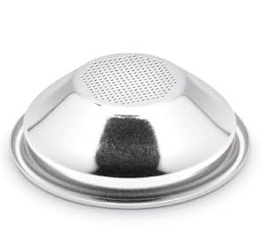
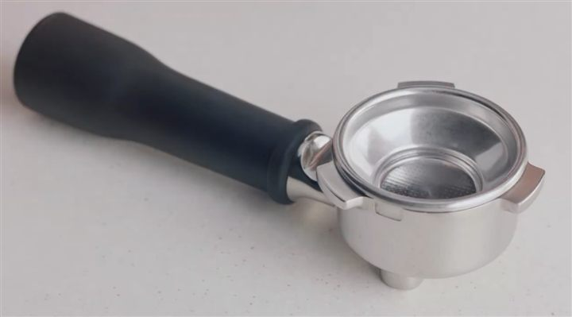
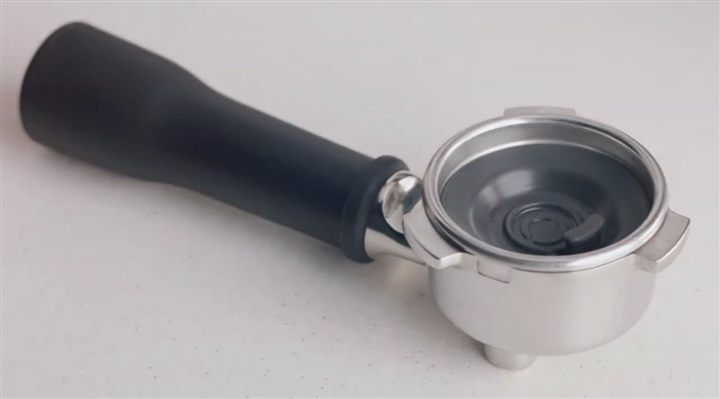
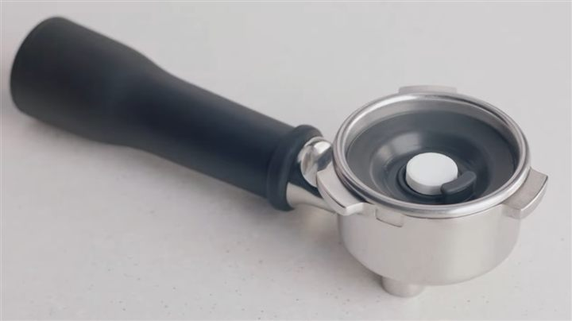
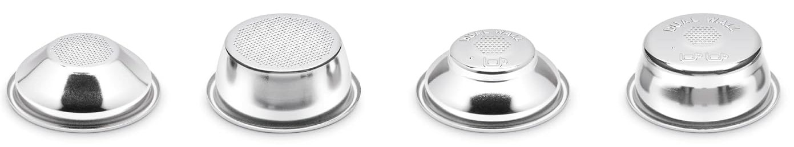

Cleaning cycle
Washes old coffee oil out of the group head (where the handle locks in), using a cleaning tablet or sachet.
Due when 1 CUP and 2 CUP take turns flashing, about every 200 shots.
Rinses with the 1 CUP button may count too, so if you rinse before or after each shot, it can come round sooner.
Takes about 5 min.
You need



Hold 1 CUP + 2 CUP only with the machine ON. With it off, that hold resets your shot sizes instead. Did that by accident?
Steps
A few minutes of setup. The machine does the rest.
- Fill the handle: the small 1 CUP basket, the rubber disc pressed into the bottom of it, then the tablet (or the sachet's powder) on top. Lock it in as if making coffee.

1 · Basket 
2 · Disc 
3 · Tablet - Empty the drip tray, push it all the way in, and lay the towel under the front. With the disc in, almost no water comes out of the handle: it goes into the tray. So the 2 L container from the manual barely catches anything.
Tray filling up? The cycle pauses a few times. Slide the tray out during a pause, empty it, push it back. Careful, the water is hot. (Owners' tip, not from the manual.)
- Fill the water tank to MAX and push it down firmly.
- With the machine on, hold 1 CUP + 2 CUP for 5 s. Both stay lit.
- Press 1 CUP or 2 CUP once to start. They take turns flashing while it runs.
- Done when the buttons stop flashing and stay lit. Empty and rinse the drip tray, then rinse the handle and disc. Tablet still there? Run it again.
That's it. The light will ask again in about 200 shots.
Questions
Can I clean before the light asks?
Yes, with a different combo, and this one is done with the machine off. Do steps 1–3, turn the machine off (1 CUP + STEAM), then hold 2 CUP + STEAM for 5 s. That opens the same cleaning mode, so press 1 CUP or 2 CUP to start, as in step 5.
Which one is the 1 CUP single wall basket?

The smaller, shallower one with holes across its whole bottom. The dual wall ones say DUAL WALL underneath. The disc is shaped to seal inside the small basket.
Only got dual wall baskets? Older boxes came without single wall ones. Use the 1 CUP dual wall basket: that's what those manuals mean.
Reset your shot sizes by accident?
They're back to the factory amounts: about 30 ml for 1 CUP and 60 ml for 2 CUP. To set your own again:
- With the machine on, hold 1 CUP + 2 CUP for 2 s. Both flash.
- With coffee in the handle as usual, press 1 CUP to start.
- Press 1 CUP again when the cup has enough. That amount is saved.
Same for 2 CUP.
Lost the cleaning disc?
Any 54 mm cleaning disc works (also sold as a blind or backflush disc). Check the size before buying: the common 58 mm ones don't fit.
The light is still flashing after the cycle
Check the cycle ran to the end and that you started it with the machine on.
Owners report that unplugging for ~10 minutes sometimes clears a stuck alert. That's forum advice, not from the manual.